文言文字词学习功能 PRD
版本 1.0 · 原型 v26 · 2026 年 10 月 12 日
以具体意思为单位解锁和复习，面向横屏移动端。以下 27 个页面与关键状态供产品、设计、研发和内容团队对齐规则及验收。
01 按字词找与产品范围
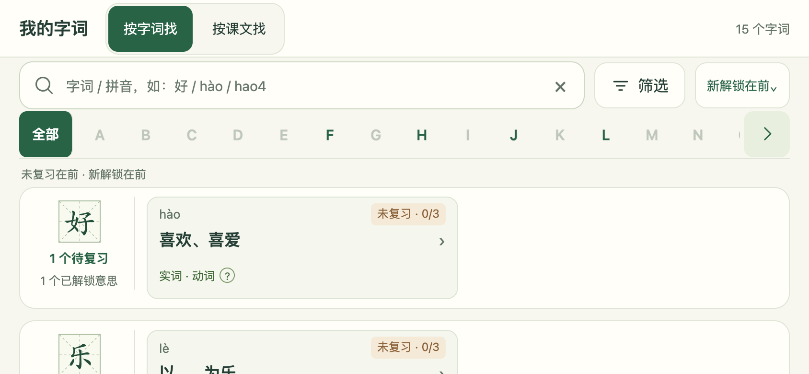
图 01 · 844 × 390 横屏视口
页面目的：孩子学完课文后，以具体意思为单位完成复习。默认进入“按字词找”，“按课文找”是同级入口，两边均可直接切换。
交付范围：横屏移动端原型 v26，2026 年 10 月 12 日。完整内容覆盖《守株待兔》《学弈》《论语·学习篇》，共 15 个字词、16 个不同意思；同一意思跨课文复用，不重复计数。
列表结构：字词用米字格展示，旁边显示已解锁意思数和待复习数。每个意思分别展示拼音、释义、词类·词性和复习进度。单个字词完成部分意思后，仍保留剩余待复习数量。
检索入口：顶部搜索、A–Z 首字母、筛选及时间排序共同作用。首屏露出下一条内容，列表支持纵向滑动；首次最多加载 12 组字词，后续每次增加 12 组。
验收：首次打开进入字词列表；点击整个意思卡片进入该意思；切到课文列表后能直接切回。截图中的学习记录均为演示数据。
打开此页面原型 ↗02 排序规则
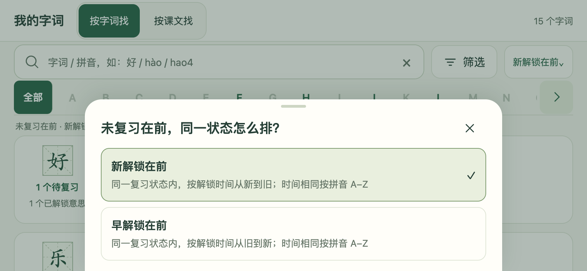
图 02 · 844 × 390 横屏视口
第一优先级：待复习在前，已复习在后。“未复习”和“复习中”都属于待复习组，不另加相互优先级。可选的未解锁预览位于已解锁内容之后。
第二优先级：同一状态按意思解锁时间排序。默认“新解锁在前”，即时间倒序；切换“早解锁在前”后为正序。更改时间方向不改变待复习优先。
第三优先级：状态和时间相同时，按字词拼音首字母 A–Z；首字母相同继续比较完整拼音，忽略声调，再用字词及唯一标识保证顺序稳定。当前原型以该字词配置的首个意思拼音作为字词排序音。
字词分组：有任一匹配意思待复习，该字词进入待复习组。取该优先组中最新解锁时间作为倒序依据，或最早解锁时间作为正序依据。字词内部的意思也按状态、时间排序，同值时用意思标识稳定排列。
例子与验收：A、B 都待复习且同时解锁，则按拼音排列；C 已复习，即使更新也在 A、B 后。新增原文不更新旧意思解锁时间；同课新解锁的意思用同一课完成时间。
打开此页面原型 ↗03 搜索与字词筛选
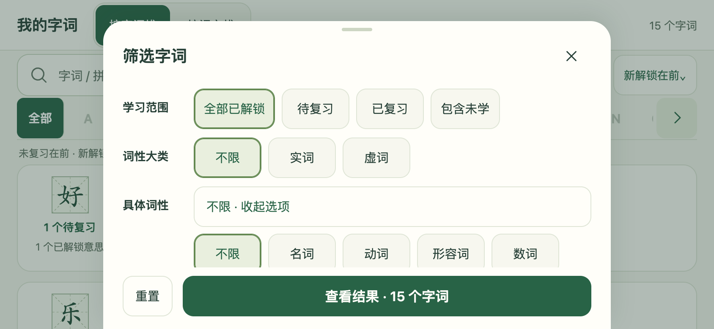
图 03 · 844 × 390 横屏视口
搜索：支持字词、释义和拼音；可以输入“好”“hào”“hao4”等。输入、字母、复习状态、词类、词性组合取交集；修改条件后重新从列表起点加载。
A–Z：首字母入口直接展示在列表上方，按意思读音的首字母筛选。“全部”清除字母条件；没有匹配内容的字母置灰。横向滑动或箭头可找到后面的字母。
筛选弹板：复习范围、实词／虚词及具体词性集中设置。弹板中的改动先保留为草稿，点击“查看结果”统一生效；直接关闭不改变原条件，重置后仍需确认应用。
范围口径：默认显示已解锁意思，也可只看待复习或已复习。当前原型保留“包含未学”的预览选项；三课真实演示中的 16 个意思均已解锁，预览内容不记录学习进度。
验收：选择虚词后只显示符合条件的意思，而不是把该字的其他实词意思一并放入结果。关闭未确认的弹板，原筛选与排序不变。
打开此页面原型 ↗04 同字多个意思与独立进度
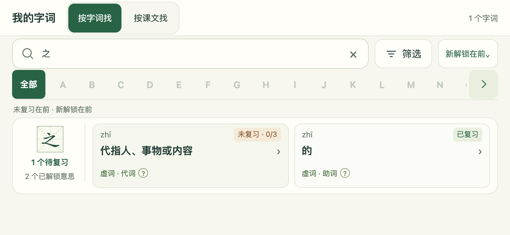
图 04 · 844 × 390 横屏视口
数据单位：字词负责聚合，意思负责拼音、释义、词类、词性、素材和复习状态。读音属于具体意思，同一个字允许多个读音。不得只在字词层存一个固定词性。
卡片内容：每个意思包含拼音、简明释义、词类·词性及状态。进度显示未复习 0/3、复习中 1/3 或 2/3、已复习；第三步内部还含选择与造句两个任务。
点击规则：整个意思卡片都是进入热区；词性标签和新原文提醒各自响应，不同时触发进入。返回列表时保留查询条件和滚动位置。
进入规则：未完成的意思进入首个未完成步骤；已答对选择但未保存造句，继续时进入造句。已复习意思仍可再次浏览，复习记录不会因浏览而清空。
验收：图中“之”的一个意思已复习，另一个意思待复习；两者状态互不影响。新文章带来已有意思时，只追加来源提醒，不改成未复习。
打开此页面原型 ↗05 多义项折叠展示
图 05 · 844 × 390 横屏视口
展示规则：每个字词默认展示排序最前的两个意思，并清楚标出总意思数、待复习数以及“展开全部意思”的入口。超过两个意思时才出现展开入口。
移动端要求：入口位于字词区域的正常布局中，不依赖右上角悬浮图标。屏幕变矮、调整浏览器宽度或字体变大后，入口仍能通过正常滑动触达。
数量口径：有筛选条件时，展示与条件匹配的意思；字词总数与待复习信息用于说明学习状态。不能让用户把筛选后的少量意思误认成这个字只有这些意思。
验收：在 844×390、812×375、667×375 的横屏窗口中，“展开全部意思”存在且可点，下一条字词仍有可继续滑动的视觉线索。
截图说明：本页“为”的 8 个意思为多义项交互样例，用于验证容量和布局，不属于三课真实内容范围。
打开此页面原型 ↗06 展开全部意思
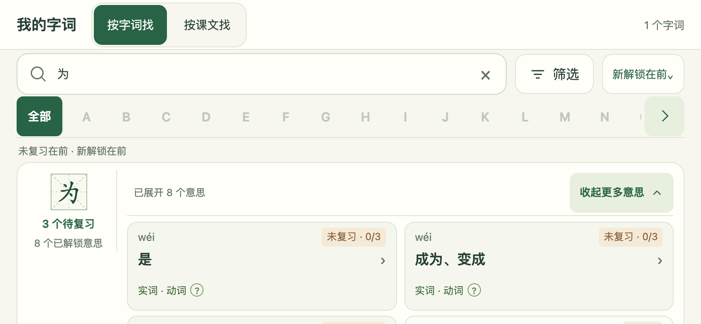
图 06 · 844 × 390 横屏视口
展开方式：在当前字词内向下展示所有匹配意思，继续使用页面纵向滚动。字词信息及各意思布局保持一致，不把 8 个意思压缩到一个固定高度区域。
收起方式：保留明确的收起入口，长列表末尾也可收起；收起后回到该字词附近，避免用户被留在空白滚动位置。返回检索页时保留当前展开状态。
状态规则：展开只是查看范围变化，不解锁新意思、不自动完成复习。全部意思仍各自显示读音、释义、词性和独立进度。
边界处理：意思很多时内容自然增高，页面主滚动负责浏览；不得裁掉展开按钮，也不得让底部操作条覆盖最后一个意思。
验收：8 个意思都能逐一进入，部分意思已复习不会把整字标成全部完成。本页沿用多义项交互样例。
打开此页面原型 ↗07 按课文找与文章分类
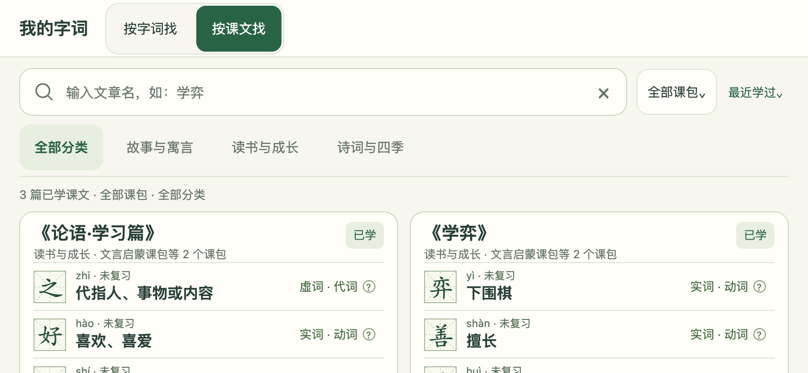
图 07 · 844 × 390 横屏视口
范围：只检索用户已学的文章。列表不提供“已学／全部”切换，“全部分类”指所有已学文章的分类全集。
布局：横屏中每行两张文章卡片，标题统一加《书名号》。卡片展示该课涉及的已解锁字词及具体意思；独立字词用米字格，不能只列字而省略对应释义。
检索：文章分类直接铺在搜索下方；输入标题时兼容是否带书名号。搜索、文章分类和课包取交集，切换分类保留已输入的关键词。
卡片入口：展示最多三个意思摘要，更多内容用数量提示；点击意思进入该意思，点击“查看本课”看本课全部意思。首次加载 12 篇，继续每次增加 12 篇。
验收：未学文章不因选择“全部分类”而出现；同一文章属于多个课包时，列表按文章标识去重。检索结果变化后仍能随时切换到“按字词找”。
打开此页面原型 ↗08 课包筛选
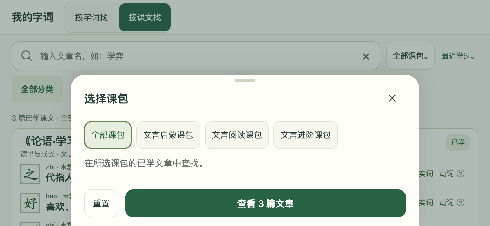
图 08 · 844 × 390 横屏视口
课包含义：课包是课程组织关系，文章分类是内容主题，两者独立。一篇文章可以属于多个课包；文章标题和课包名不可混作同一层分类。
交互：点击课包入口打开弹板，选择全部课包或一个课包，确认后应用。关闭弹板保留之前的选择；重置只清除课包，不清除文章分类与搜索词。
结果统计：确认按钮展示当前已学范围内，同时符合搜索、分类和草稿课包条件的文章数。没有结果时也能应用，并提供清除条件的入口。
持久性：列表切换、查看课文再返回时保留当前课包条件。切换课包不得让已学列表出现未学文章。
验收：选择某课包后，只出现该课包内已学且匹配分类及关键词的文章；同一篇文章即使归属多个课包，也只出现一次。
打开此页面原型 ↗09 课文排序
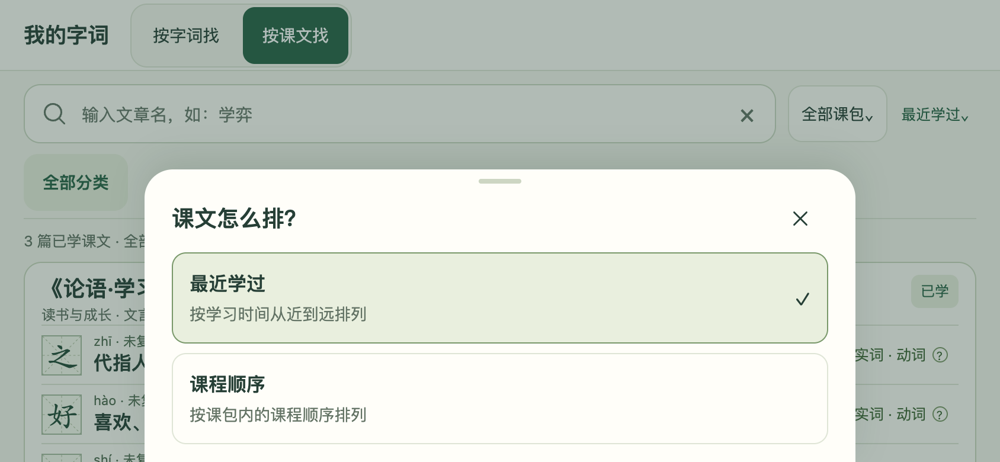
图 09 · 844 × 390 横屏视口
可选项：默认最近学过在前，即按文章学习完成时间倒序；也可切换课包顺序。这里排序对象是文章，与字词列表的意思解锁排序分别存储。
课包顺序：选中一个课包时按该课包中的课程顺序排列；全部课包时按配置中的课包顺序及课次顺序稳定展示，同文去重。
条件保留：更改排序不清除搜索、文章分类或课包条件，也不改变任一意思的复习状态。
时间区别：文章学习时间与意思首次解锁时间是两个字段。同一个旧意思在新文章出现，文章可以排到前面，但意思首次解锁时间仍保留原值。
验收：切换两种排序后，结果集合一致、顺序符合所选规则；字词页的时间方向不会跟随课文页变化。
打开此页面原型 ↗10 本课字词
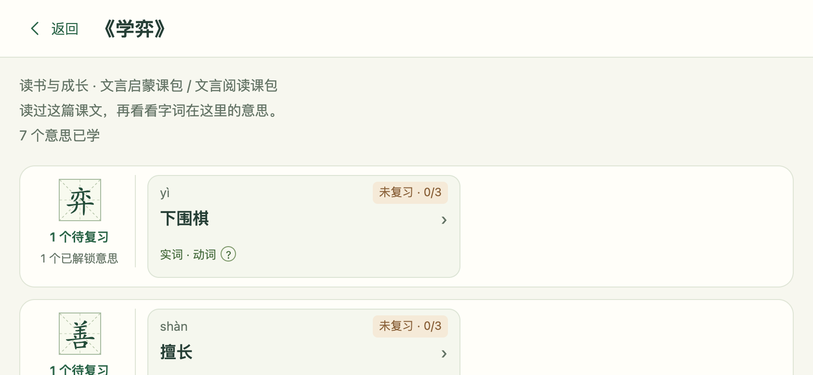
图 10 · 844 × 390 横屏视口
进入：从文章卡片的“查看本课”进入，顶部持续显示《课文标题》，返回回到原有课文检索条件及位置。
内容：按字词聚合这篇文章出现的具体意思，每个意思分别展示拼音、释义、词性和进度。同一个字在本课有两种意思时显示两项，同一意思出现多次不重复生成学习单元。
关系：本课列表使用文章与意思的关联，而不是只使用意思的首次来源课文。例如“之”的代词用法同时属于《学弈》和《论语·学习篇》。
上下文：从本课进入意思后，“回到原文”优先定位本课中对应的用法；没有对应位置时才回退到可用来源。返回检索不重置复习进度。
验收：《学弈》展示 7 个意思，包括“之”的两种用法；《守株待兔》4 个，《论语·学习篇》6 个，合计关联 17 项、去重后 16 个意思。
打开此页面原型 ↗11 看懂意思与视频素材
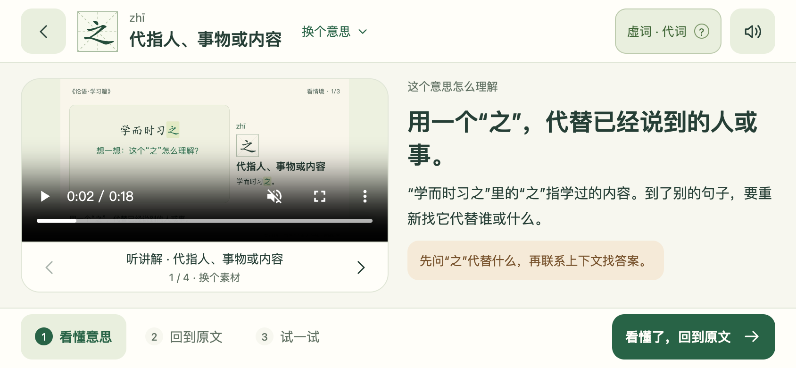
图 11 · 844 × 390 横屏视口
稳定身份：顶部始终表示当前字词、这个意思的读音、简明释义及词性；下方步骤名表示任务。进入“试一试”后，不把顶部释义替换成引导语。
内容分工：左侧是多媒体区域，右侧用易懂的话解释意思、补充关键提醒。底部固定三个步骤及下一步主操作，主体内容独立滚动，不遮挡按钮。
视频：支持 MP4，提供播放、暂停、进度拖动和全屏；在页面内播放且不自动发声。离开页面、切换素材时停止旧播放，避免音频叠加。
完成条件：仅打开页面或视频播放结束不会完成复习。通过“看懂了，回到原文”记录第一步完成；不强制观看所有素材或完整视频。
验收：任一意思可进入并播放对应视频；本次 16 个意思已配讲解视频。三个步骤全部完成的判定见第 24 页。
打开此页面原型 ↗12 静态图片与放大
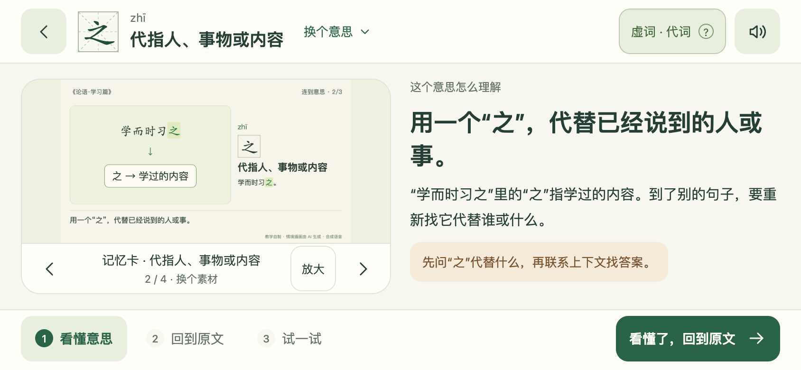
图 12 · 844 × 390 横屏视口
格式：支持 JPG、PNG；图片按原比例完整放入媒体区，避免裁掉教学主体。图片、释义和原文必须指向同一意思，不能用整字通用图替代所有意思。
操作：图片提供放大入口，打开查看弹板，关闭回到原素材和原步骤。图片尺寸较小时保持清晰，素材加载阶段有明确反馈。
适配：横屏高度有限，媒体区随可用高度缩放；右侧解释可滚动。米字格用于单独呈现的字词，古文整段保持正常排版与目标字高亮。
内容配置：素材包含唯一标识、格式、标题、地址、替代文字及可选封面。资源错误时不影响文字解释和返回操作。
验收：PNG 教学卡和 JPG 情景图都能显示、放大、关闭；不会因长解释撑走底部下一步。
打开此页面原型 ↗13 同一意思切换素材
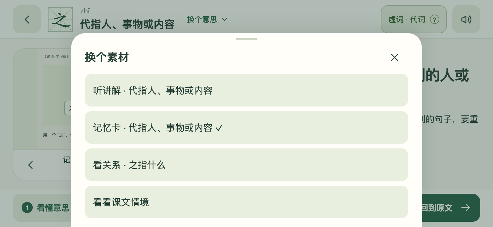
图 13 · 844 × 390 横屏视口
切换入口：多媒体底部显示当前素材标题与“第几份／共几份”，可用左右按钮切换，也可点击标题打开素材列表。
边界：第一份禁用上一个，最后一份禁用下一个；只有一份时不提供无效切换。列表中标识当前素材，选中后关闭弹板并更新内容。
隔离：素材切换只改变当前意思的媒体，不改变意思、课文或复习进度。停止旧视频及朗读，防止多个来源同时发声。
配置顺序：由该意思的素材数组决定，支持视频、图片、动图混排；未配置资源不得显示空卡占位。
验收：从视频切到图片再切回，仍是同一个意思；点击素材标题不会打开“换个意思”。
打开此页面原型 ↗14 动图与声音
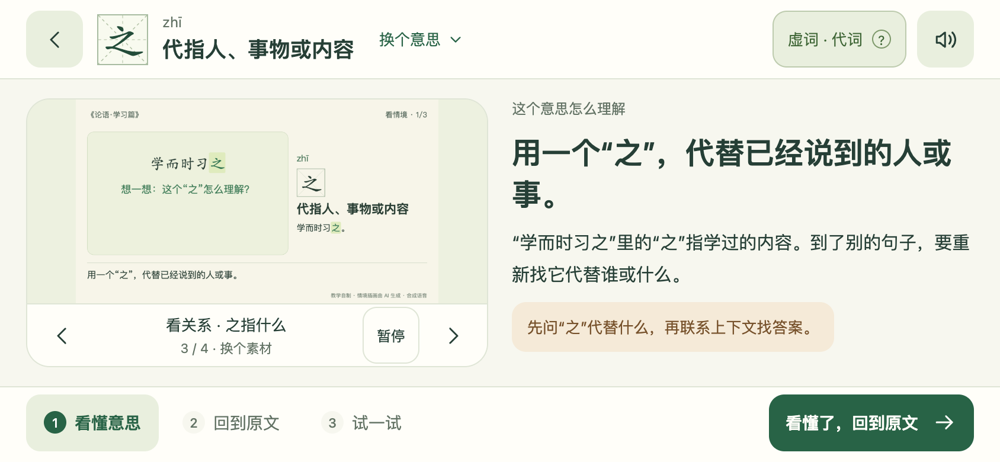
图 14 · 844 × 390 横屏视口
动图：支持 GIF，提供播放／暂停。用户偏好减少动态效果时优先显示静态封面；恢复播放仍保留当前意思和步骤。
发音：顶部声音按钮播放当前意思的读音；多音字必须关联意思自己的录音。再次触发或离开相关页面时停止旧声音，不让不同读音同时播放。
内容覆盖：真实演示含 2 份关系动图、情景 JPG、16 张 PNG 意思卡、16 段 MP4 讲解及本地读音、解释和原文朗读音频。通用提示的部分朗读使用设备语音。
内容验收：每份资源逐项校对义项标识、读音和解释。插画为生成素材，语音为合成语音，正式教学上线前仍需教师听审和内容终审。
验收：动图能暂停恢复，原文及词音可播放；停止媒体不会改变已完成步骤。
打开此页面原型 ↗15 词类词性说明弹板
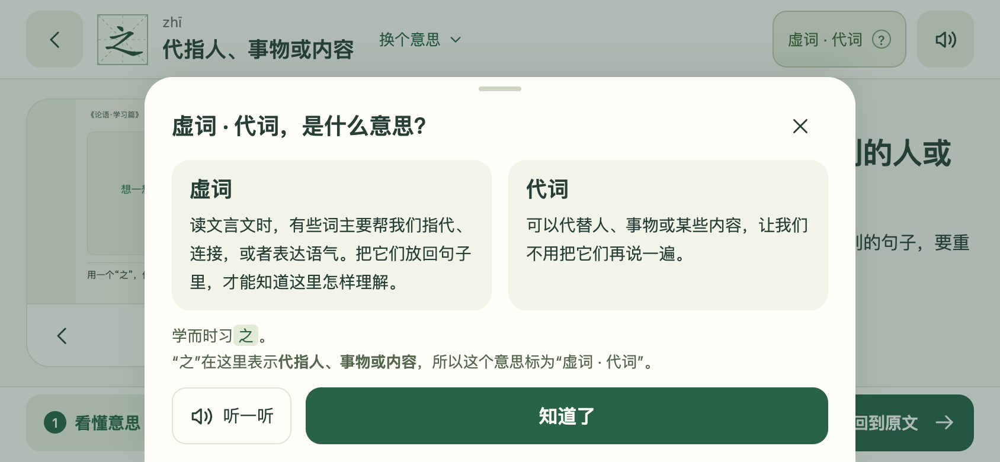
图 15 · 844 × 390 横屏视口
入口：词类·词性作为可点击标签，例如“虚词·代词”。孩子点标签后，在当前页面打开解释弹板，不离开当前意思。
内容：分别说明词类是什么、该词性起什么作用，并用这个意思在句子里的用法举例。解释采用儿童可理解的表达，避免只再列术语。
归属：词性标在意思和语境上，同字不同意思可以属于不同类别。标签本身不代表字词永远只有一种词性；教学标注采用内容团队确认的统一口径。
交互：关闭后回到原步骤，读解释不计算复习完成。列表中的标签可独立点开，不触发整张意思卡片跳转。
验收：无论从检索卡片还是学习页进入，弹板都说明当前意思对应的类别；关闭不丢失选择答案或造句草稿。
打开此页面原型 ↗16 主动切换意思
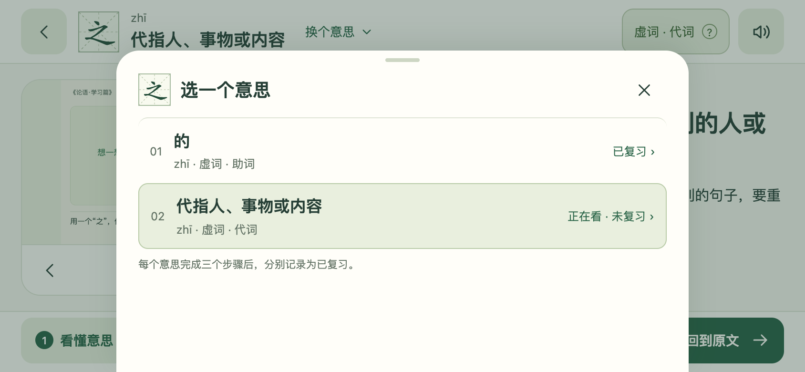
图 16 · 844 × 390 横屏视口
入口：通过顶部“换个意思”主动打开，展示这个字词的各个意思、读音、词性与复习状态。当前意思有明确选中标记。
切换：只有明确选择另一个意思才变更学习对象。切换后保持所处大步骤，更新媒体、原文来源和练习，并重置不适用的文章及句子定位。
进度：每个意思单独保存进度、作答和造句草稿。切回原意思后读取原记录，不能把前一个意思的完成状态复制过去。
未解锁：若展示预览意思，应清楚标明未解锁；浏览预览不写入学习进度。三课真实演示默认只涉及已解锁内容。
验收：从“之＝的”进入原文，在原文中随意点其他字，不能自动跳到“之＝代指人或事物”。
打开此页面原型 ↗17 回到原文与文章切换
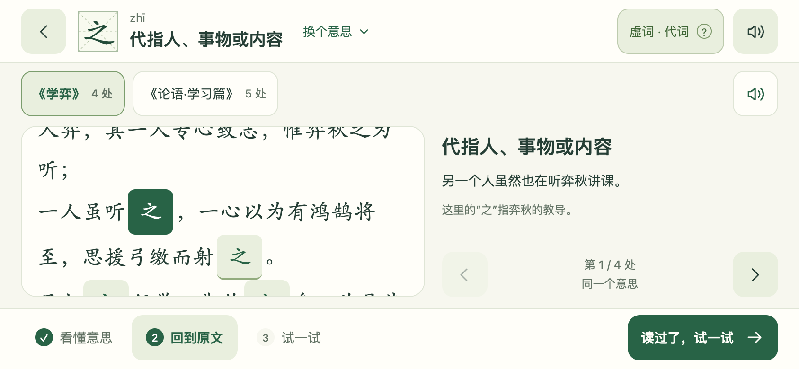
图 17 · 844 × 390 横屏视口
入口：从看懂意思继续，或点击“回到原文”步骤进入。当前意思身份保持不变，正文、翻译和定位都受该意思约束。
文章入口：把可用文章平铺为一行标签，标题带《书名号》，显示本意思在该文中的出现次数；当前文章高亮。点击直接切文，不再通过“换个意思”绕行。
正文规则：只高亮并允许点击属于当前意思的位置。其他同形字按普通正文显示，即使有另外的意思，也不能在这里改变学习对象。
完成条件：查看当前原文后点击“读过了，试一试”记录第二步完成。当前规则不要求读完所有文章、点完所有位置或听完整段朗读。
验收：代词“之”可在《学弈》和《论语·学习篇》间切换；“的”的意思只提供匹配该意思的原文位置。
打开此页面原型 ↗18 同一文章中的多个位置
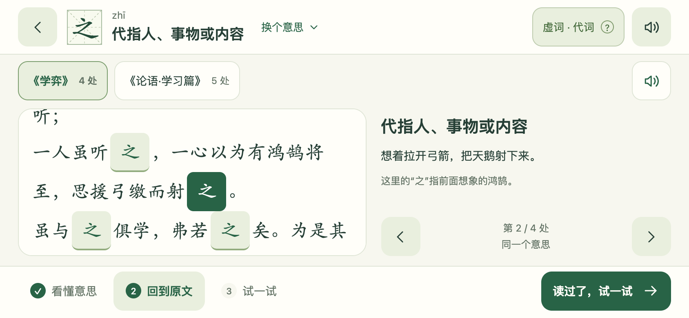
图 18 · 844 × 390 横屏视口
出现位置：文章中的一次用法是一个独立位置，关联文章标识、意思标识、正文位置、局部翻译和理解提示。文章标签里的数量表示位置数，不是意思数量。
切换：点击正文高亮，或使用上一处／下一处，定位到当前意思在该文中的另一个位置。显示“第 2／4 处”等计数，边界按钮禁用。
同步：选中位置的高亮、右侧翻译、提示与计数同时更新；需要时自动滚动让目标可见。其他意思的同形字不参与本次位置计数。
记忆：同一浏览会话切换文章再返回，恢复该文上次的位置；初次进入按来源课文及第一个匹配位置定位。
验收：《学弈》的代词“之”有 4 处可切换，《论语·学习篇》有 5 处；选中任何一处，顶部意思仍保持一致。
打开此页面原型 ↗19 多篇原文展开与收起
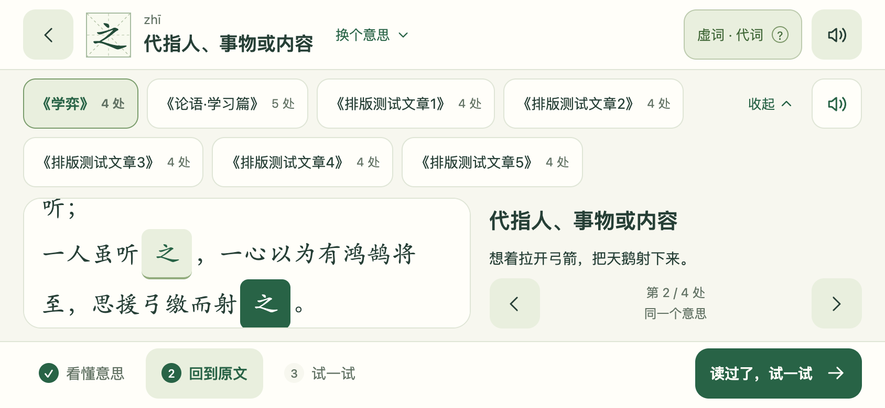
图 19 · 844 × 390 横屏视口
默认：文章标签先铺一行，有溢出时显示“展开全部”。通过横向滑动也可找到更多文章；文章较少时不显示无效展开按钮。
展开：标签换行展示，同时限制区域高度，避免把原文主体与底部操作挤出屏幕。超出两行容纳范围时在文章区域内滚动，收起入口保持可见。
选择：点任一文章后自动收起，选中文章在一行模式中保持可见；继续显示该意思的匹配位置数。切文只改变原文上下文，不改变意思。
验收：多篇文章在小横屏仍可选择，原文和底部主操作可触达；返回上一文章后恢复其位置。额外原文是否需先学过，正式接入时由内容授权范围确定，不能直接套用课文检索规则。
截图说明：为展示溢出状态，本页加入“排版测试文章”样例；这些标题只存在于截图测试环境，不是实际课程目录。
打开此页面原型 ↗20 试一试选择题
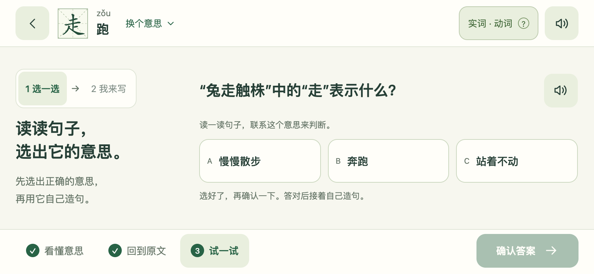
图 20 · 844 × 390 横屏视口
入口：本步骤先“选一选”，再“自己造句”。顶部仍显示当前字词的意思；题目及引导语放在内容区，不能复用顶部释义位置。
选择：点击选项只更新选中态，不立即判题。未选择时确认按钮不可用；点击确认才提交并显示结果。
题目：题干、选项、正确项与解释均关联具体意思。题目应考察在新语境中能否辨别意思，不把同字其他意思误当同一个学习目标。
状态：记录作答次数及是否答对。只打开练习、只选中选项或提交错误都不能完成第三步，更不能直接结束复习。
验收：完成前两步后本页仍显示练习未完成；点击正确选项后，在确认之前没有“已答对”或“已复习”状态。
打开此页面原型 ↗21 选择题错误反馈
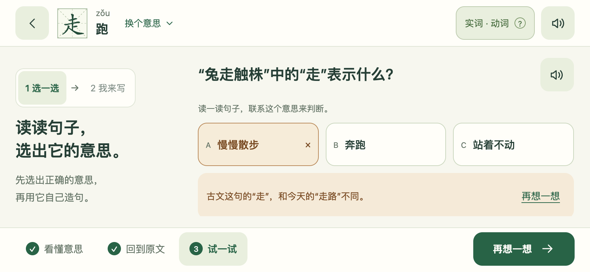
图 21 · 844 × 390 横屏视口
反馈：提交错误答案后给出本题对应的解释与再试一次入口。反馈围绕意思差别，不只显示一个红叉。
重试：清除本轮选中态后重新选择；保留已完成的看懂意思和回到原文步骤。错误不能覆盖此前学习内容或造句草稿。
完成约束：没有答对时不开放正常的造句完成链路；不得把提交过答案当作完成选择。重复错误仍保持第三步未完成。
离开恢复：退出后再进入，读取已保存的练习记录；未正确完成时继续选择任务。复习状态仍为进行中。
验收：提交错误答案后不能直接得到“完成复习”；重新选择正确项并确认后，才能继续造句。
打开此页面原型 ↗22 选择题正确反馈
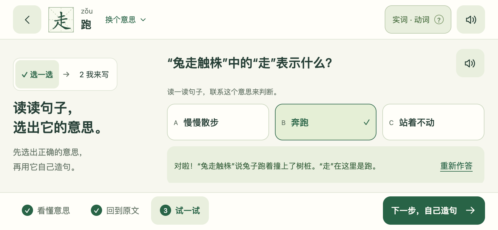
图 22 · 844 × 390 横屏视口
反馈：答对后显示正确解释，并把主操作明确改成“自己造句”或对应的继续表达。不能在这一刻直接展示复习完成。
进度：仅记录 practiceChoice 完成，第三步 practice 仍未完成；只有造句保存后才可完成第三步。
续接：点击继续进入造句；若此时退出，下次从该意思继续，应进入造句任务，避免强迫再答同一道选择题。
边界：已经完成的选择任务再次查看不清空正确记录；切换其他意思时读取其他意思自己的记录，不沿用本题答案。
验收：正确反馈后的下一步一定是孩子输出句子，待复习状态不会提前变为已复习。
打开此页面原型 ↗23 自己造句与草稿
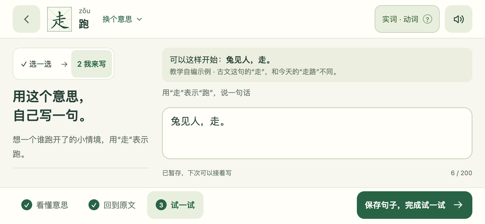
图 23 · 844 × 390 横屏视口
任务：围绕当前意思给孩子一个输出位置，显示造句引导和可参考的例子，孩子自行输入句子。造句属于“试一试”的必做子任务。
输入：最多 200 个字符，输入过程中保存草稿；退出、刷新或稍后回来仍可续写。纯空格或空内容不能保存为完成。
保存：保存非空句子后记录 practiceWrite；必须与已经答对的选择题共同满足，才把第三步标记完成。
评价边界：当前演示只判断是否有有效输入，不自动判断语法、文言表达或意思运用是否正确，也不强制要求句中包含目标字。因此“已复习”表示完成流程，不等于已掌握。
验收：答对选择后输入“兔见人，走。”并保存，句子可重新打开；空白提交失败，进度不变。输入法弹出时输入框及保存入口应可滚动触达。
打开此页面原型 ↗24 完成复习与进度保存
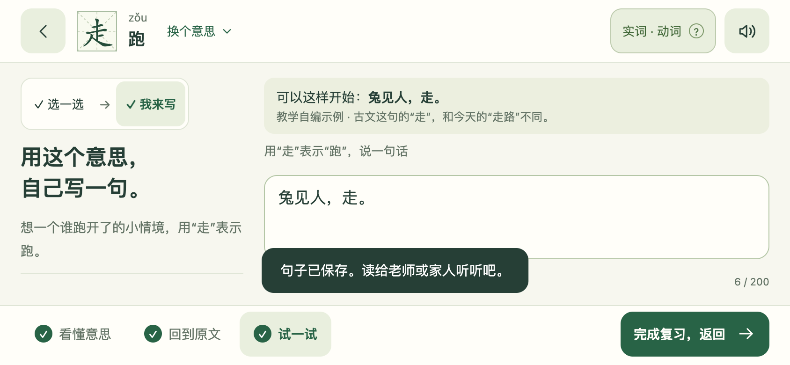
图 24 · 844 × 390 横屏视口
完成公式：看懂意思完成 AND 回到原文完成 AND 选择题答对 AND 非空造句已保存。第三步由后两个条件共同组成；满足全部条件才写入完成时间并显示已复习。
状态变更：0 个大步骤为未复习，完成 1 或 2 个为复习中，3 个为已复习。答对但没造句时，第三步仍不算完成；如果跳步到造句，仍需补齐缺失步骤。
返回：提供“完成复习，返回”，回到原列表和原查询；这个意思排到已复习组。字词里仍有待复习意思时，整组继续位于待复习区。
存储对象：以用户与意思标识保存 meaning、reading、practiceChoice、practiceWrite、completedAt，另存草稿及已保存句子。首次解锁时间独立于完成时间。
实现边界：现版用浏览器本地存储，刷新保留，同一公开链接在不同设备上的进度不互通。正式接入账号后需按用户同步进度；清除浏览器数据会丢失本地记录。
打开此页面原型 ↗25 空结果与检索恢复
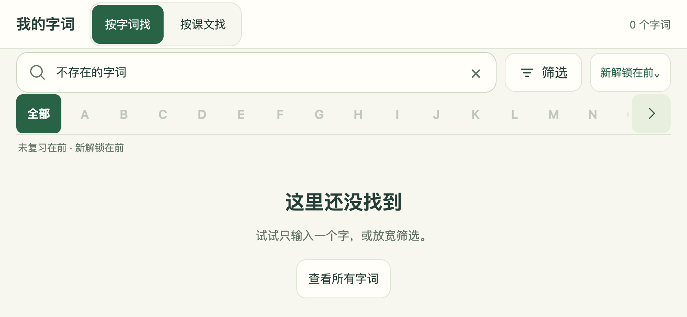
图 25 · 844 × 390 横屏视口
空状态：没有匹配字词时展示清楚的空结果和调整条件入口，保留用户输入，不能直接显示另一批无关内容。
清除规则：存在筛选时先允许清除筛选；清除操作应明确作用范围。没有筛选但关键词无结果时提供清空关键词，恢复默认列表。
课文同理：无匹配课文时保留搜索、分类和课包上下文，提示调整条件；不能为了填满列表自动放入未学文章。
返回规则：进入意思、词性弹板、本课列表再返回，尽量保留检索条件、已展开字词和滚动位置。新搜索或新筛选应用后从结果起点展示。
验收：输入不存在的字词后有明确反馈；清空关键词恢复结果，排序方向仍与清空前一致。
打开此页面原型 ↗26 新增原文提醒与解锁关系
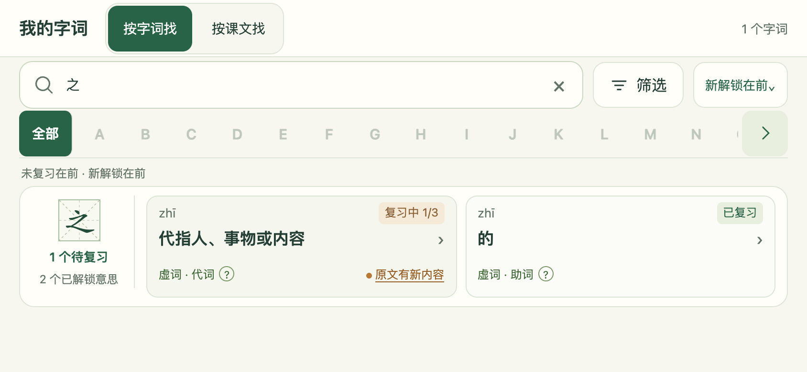
图 26 · 844 × 390 横屏视口
解锁：学完课文后，解锁该课关联的具体意思。第一次出现的意思记录解锁时间；已经解锁的意思只追加文章关联，保留原读音、状态及解锁时间。
新标识：以“用户＋意思＋文章”记录是否看过新原文。字词卡片可汇总该意思的新来源提醒，原文文章标签上显示新标识。
消除：实际进入这一个意思下的这一篇原文后，清除对应提醒；打开其他意思或其他文章不清除它。单纯看到提醒不算看过原文。
核心关系：字词含多个意思；文章与意思多对多；每个关联可有多个出现位置；课包与文章多对多。出现位置必须绑定唯一意思，确保原文点读不串义项。
验收：已复习的“之”新增一篇来源后仍已复习；新文章提醒可见，进去看后消失；其他新来源提醒不受影响。
打开此页面原型 ↗27 资源异常与交付验收
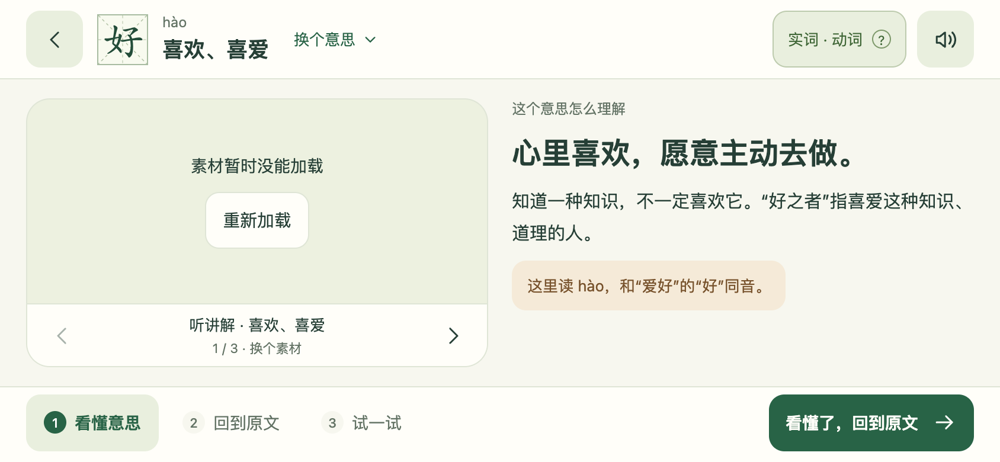
图 27 · 844 × 390 横屏视口
异常：图片、视频加载失败时展示“素材暂时没能加载”和重新加载入口，保留释义及主导航。失败不得出现无限加载遮罩，也不得自动改变复习状态。
横屏验收：重点窗口为 844×390、812×375、667×375 CSS 像素；留出设备安全区域，主要点击热区至少 44×44，长内容可滚动。重点检查展开全部、原文切文、造句保存不被遮挡。
业务验收：同时覆盖状态＋时间＋拼音排序、多音字、8 个意思、同义多文及同文多处、答错重试、答对后造句、缺少任一步不能完成、刷新续写与新来源独立提醒。
交付：公开原型附完整图片和音视频，PRD 含 27 个页面或关键状态截图。三课内容可完整演示；《论语·学习篇》为《学而》1.1 与《雍也》6.20 的学习选篇。
正式接入边界：当前不是账号系统，也没有遗忘周期或自动重置复习规则。正式版需接入课程完成事件、用户进度同步与内容审核；具体遗忘策略及自动造句评价需另行定义。
打开此页面原型 ↗